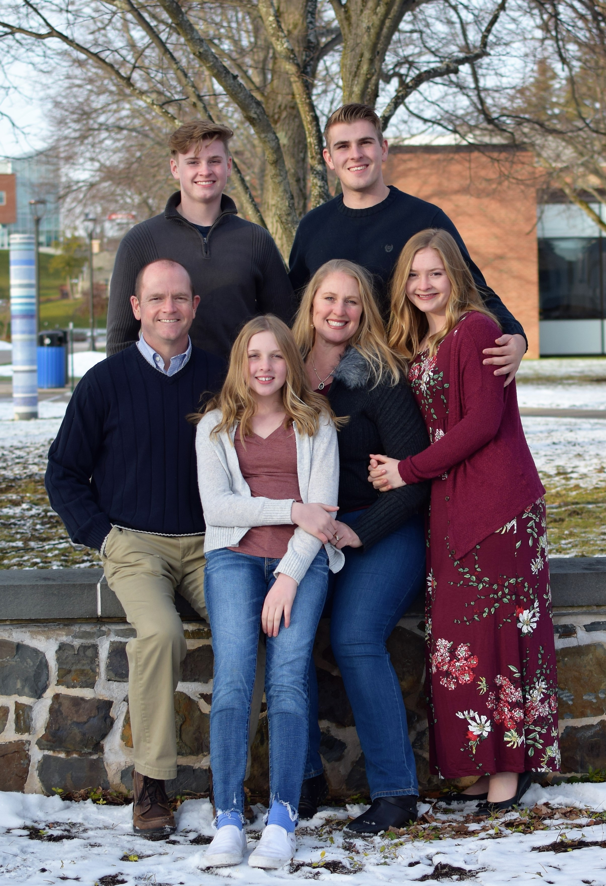
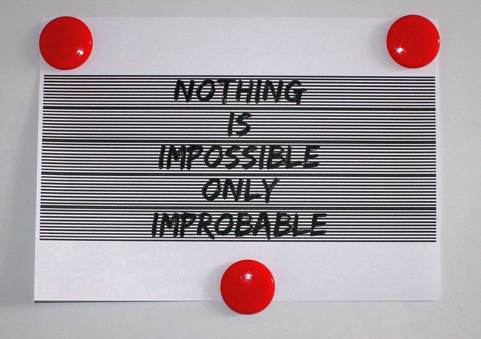

Family
Born in Chandler May 19, 1999, I’m the first-born child of Troy and Jamille Turley. I left my birth-state of Arizona 5 days later, flying with my mother and father to start our lives in Virginia. As time would go on, we would move to North Carolina and New York spending long stints of time in both locations. During this time, I gained 3 siblings, Jocey, Dillion, and Kaylen: girl, boy, girl respectively. Currently I’m the only child in college, Jocey is on a mission and both Dillion and Kaylen are still in high school. My family is the best and while my siblings all have their diverse interest, I always share at least one of them with them. Jocey and I love reading books. Dillion and I share a love for Football, and I enjoy watching his games. Kaylen loves that outdoors and since moving west we haven’t had too much time to go hiking together I’m sure we will whenever we meet.
 The warmest place one can be is in the arms of their familyfrom left to right Troy, Dillon, Kaylen, Jamille, Rostin, Jocey.
Education
I just finished the first semester of my second year at BYU. I enjoyed my classes and have been able to have a good learning experience, despite Covid-19. I have been accepted into the Finance major One of the great things about BYU is their Marriot School of Business, as one of the top business schools in the country, they have been able to find innovative solutions to provide the best online class experience possible. So, while I haven’t been able to meet as many people as I would have liked during this interesting season, I have still been able to attend many of the business clubs and business school activities through various means. This year I was able to participate in one of the most challenging yet rewarding classes I have ever taken, Finance 321, where I was able to learn about investing and the rules of the stock market in a time where new and excited case studies appear every day changing our understanding of the Finance field.
Future
I’m currently studying for the LSAT exam as I will be taking it this spring in order to apply to Law School. While I’ve not decided where I want to go specifically, I am serously considering both Chicago Unviersity and Brigham Young University (follow the links to see each schools web page). I’m not married but of course plan to have a family. Either way, no matter where I go or what happens its sure to be an adventure!
-Rostin Turley
555-555-5555
notreal@whoknows.com